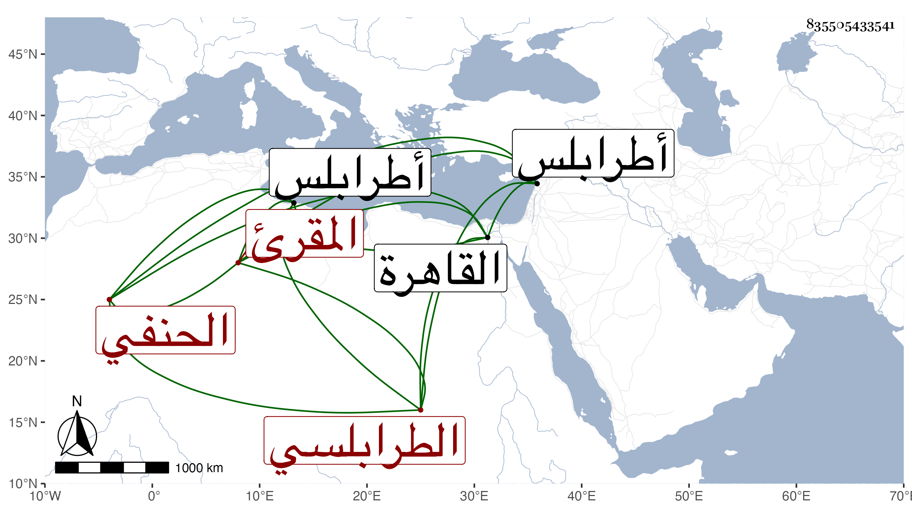

0902Sakhawi.DawLamic.ITO20230111-ara1.EIS1600.835505433541
Biography ID: 835505433541
300
محمد بن يوسف بن سعيد شمس الدين أو ناصر الدين أبو عبد الله بن الجمال الطرابلسي الحنفي المقرئ والد الصلاح محمد الماضي . ولد في يوم الجمعة عشرى جمادى الأولى سنة تسع وثمانمائة بطرابلس ونشأ بها فحفظ القرآن وأخذ القراءات عن الشهاب بن البدر وغيره وأتقن الميقات والحسان وولي مشيخة زاوية أرغون شاه ببلده حتى مات في سنة ثلاث وستين ، وصفه السراج الحمصي في عرض ولده بالقاضي مؤتمن الملوك والسلاطين وغيره بالشيخ الصالح الإمام إمام القراء وشيخ الفضائل طرا . وآخر بالأخ في الله تعالى والولي في ذاته القاضي شمس الدين الكاتب وقدم القاهرة بولده سنة ست وأربعين فعرضه على مشايخها ثم رجع به رحمه الله .
